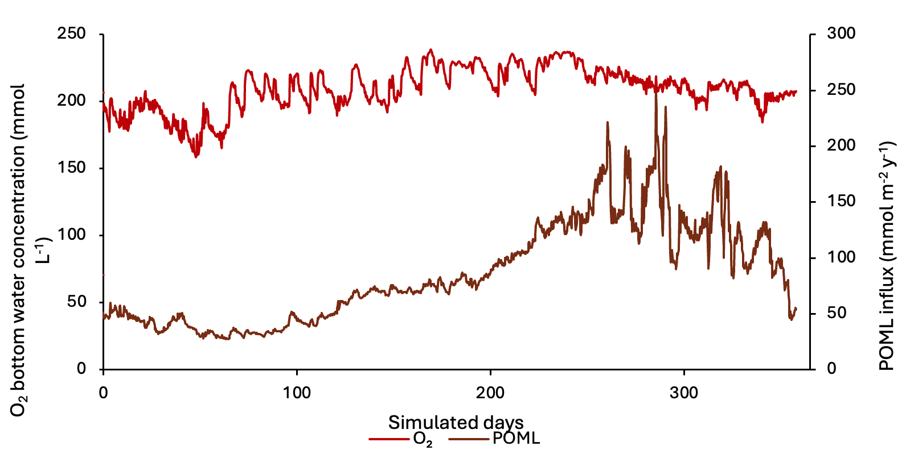
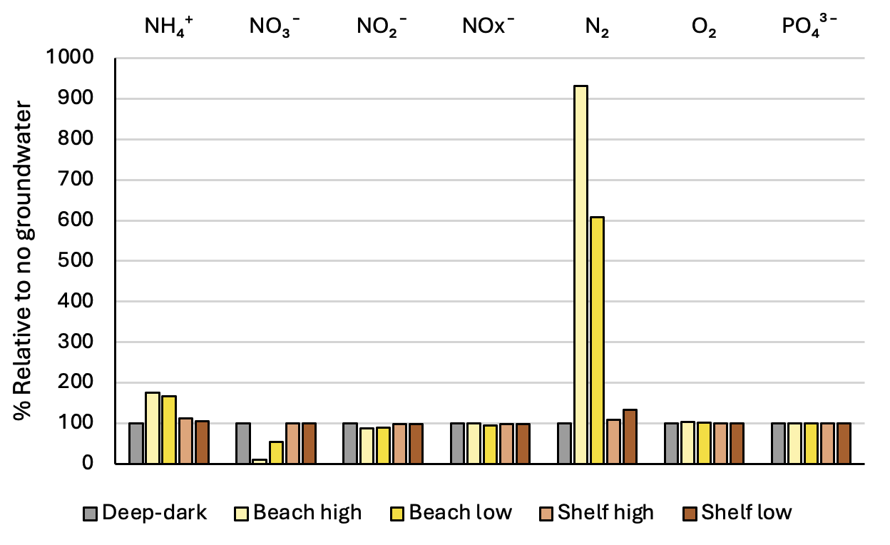
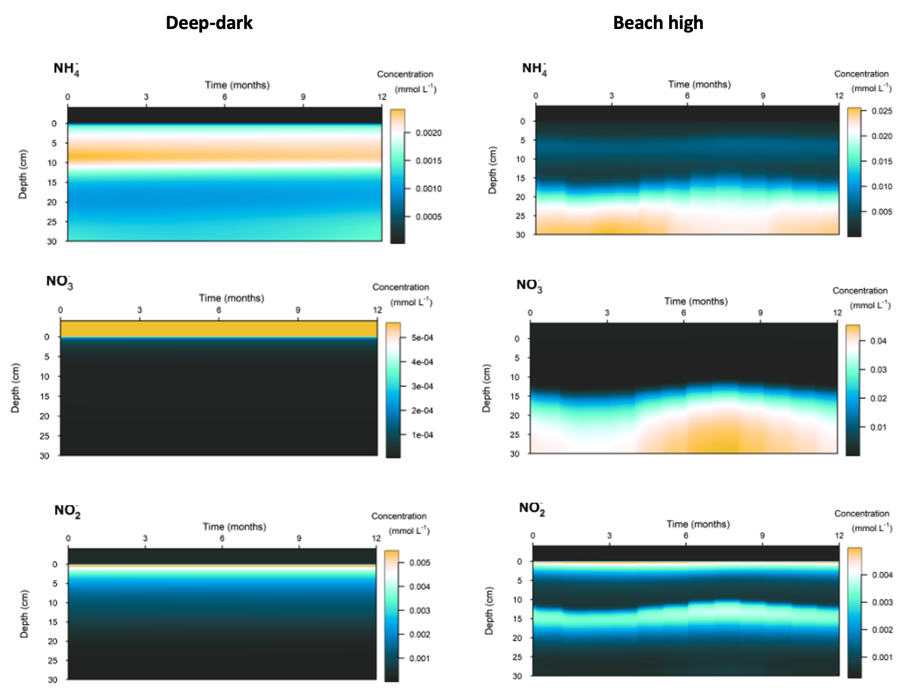

12 Sediment Biogeochemistry
12.1 Overview
The store of carbon and nitrogen in marine sediments can be a major factor controlling coastal water quality. A significant fraction of organic material that deposits into sediments is recycled and re-released back to the water column as inorganic, bioavailable nutrients, which can subsequently fuel primary productivity. The remainder can be assimilated via processes such as denitrification, or buried into deeper sediments. This cycling and movement of materials in surficial sediments, termed early diagenesis, is highly dynamic and regulated by temperature, \(O_2\) availability and physical processes acting at the sediment–water interface. In many coastal ecosystems, early diagenesis is further complicated by macroinvertebrate bioturbation and the presence of aquatic vegetation.
In coastal zones, high inputs of organic carbon and nutrients to the sediment may arise from autochthonous sources (e.g. phytoplankton, benthic algae, seagrass) and allochthonous sources (e.g. catchment-derived material). In highly polluted systems, long-term deposition can build a legacy pool of carbon and nutrients and establish biogeochemical conditions that promote \(O_2\) consumption and, in extreme cases, \(H_2S\) production.
Specifically within Cockburn Sound, the legacy loading of wastewater and industrial effluents from the 1950s to the 1980s led to excessive primary production and nutrient enrichment of naturally sandy sediments. Construction of the Garden Island causeway in the 1970s reduced the rate at which nutrients were flushed out of Cockburn Sound, allowing the build up (Zhou et al., 2024). Water quality has been monitored for decades and has improved following reductions in point-source nutrient inputs, such as wastewater treatment plants. However, the sediments within and surrounding Cockburn Sound retain some legacy stores of nutrients that supply bioavailable N and P to the water column, though the relative importance of these sources has remained uncertain.
Sediment cores analysed by Zhou et al. (2024) revealed a nutrient accumulation history spanning roughly the last 100 years. Lead isotopes used to date the upper ~70 cm of sediment suggested an average sedimentation rate of ~0.5 cm y\(^{-1}\). The upper 6–10 cm were characterised as a mixed layer with no clear isotopic signature, consistent with physical mixing and/or bioturbation. Below this layer, clear step changes in nutrient concentrations were observed: low values prior to the 1950s, an increase in the 1950s (linked to water-column pollution), and a further increase in the 1980s (associated with the causeway). Despite reductions in nutrient inputs since the 1980s, nutrient concentrations in the surface mixed layer remain highest, suggesting a shift to a higher nutrient state that may have yet to fully reverse.
Sediment N and C stocks have been estimated previously, however, these estimates have remained uncertain. The sharp redox gradient that typifies coastal sediments causes a complex series of chemical reactions, mediated by diverse microbial communities, and occurring over timescales from days to decades. This complexity has made it difficult to quantify the nature of \(DIN\) fluxes to the water column, and rates of denitrification vs long-term burial. Furthermore, areas of N-rich groundwater along the eastern coast have also been identified as a contributor to sediment N, with \(NH_4^+\), \(NO_3^-\) and dissolved organic nitrogen (\(DON\)) able to build up in the pore waters of shallow beach sediments and along Kwinana Shelf.
The respiration of organic matter in the sediment can also maintain a sediment oxygen demand (\(SOD\)) that can impair water column \(O_2\) conditions. \(O_2\) profile measurements in the water generally show that Cockburn Sound is well mixed and oxygenated from the surface to bottom, but can experience low oxygen in the deep basin during periods of high temperature and low wind, when stratification occurs and reaeration from the atmosphere is reduced. Dalseno et al. (2024) recorded bottom-water \(O_2\) as low as 0.08 mmol L\(^{-1}\), while shallower waters remained around 0.22 mmol L\(^{-1}\). They concluded that sediment respiration was driving these episodes, and the Cockburn Sound basin is vulnerable to hypoxia when experiencing vertical stratification and warm temperatures.
This chapter describes the development and assessment of the sediment biogeochemistry model used within the CSIEM platform to understand the mass fluxes across the sediment–water interface, and rates of processing of oxygen, carbon and nutrients within the different sediment types of Cockburn Sound. CANDI-AED is the sediment early diagenesis model used for this purpose and is calibrated based on recent data-set collected within the WAMSI-Westport Marine Science Program (Eyre et al., 2025). The model results are analysed to resolve variability in sediment–water \(O_2\), carbon and nutrient fluxes among the different sediment types, and the results are used to complete a sediment biogeochemical budget for carbon, nutrients and related compounds under present-day conditions. This information provides the foundation for the water column biogeochemical model described in Chapter 13.
12.2 Model Description and Approach
12.2.1 Overview
The Cockburn Sound sediment modelling is based on a synthesis of available sediment grab and flux data. These data were used to develop conceptual models for different sediment “functional types”, which in turn guided the configuration and calibration of the numerical model CANDI-AED.
Most sediment diagenesis models in the literature focus on offshore or coastal unvegetated sediments, and are therefore not adequate to represent key features of Cockburn Sound such as extensive shallow sediments with an active microphytobenthos layer, or areas supporting seagrass habitats. Customisations were therefore developed to simulate these environments, with unique model configurations applied to each sediment type as guided by the available sediment core incubation data.
12.2.2 Categorisation of sediment types
The sediments within Cockburn Sound have been mapped by Skene et al. (2002) and vary between sandy and muddy-sand. Areas within Cockburn Sound and Owen Anchorage can be broadly categorised as i) deep sediments in depositional zones that do not receive light for photosynthesis and tend to have finer grain sizes, and ii) more sandy shallow sites, that support benthic microalgae or seagrass meadows. Although shallow sites were more numerous, the deep areas occupy a larger fraction of Cockburn Sound’s area, making them particularly important for system-scale budgets. At the same time, seagrass and benthic algae habitats are critical from an ecological perspective and for understanding coupled nitrification–denitrification.
Eyre et al. (2025) collected 12 cores for incubation experiments, and four were in deep areas and eight in shallow areas. Two shallow sites (7 and 8) did not have seagrass. Core descriptions indicate that most sediments are sandy, with well-mixed upper 10 cm, and grey with occasional black patches, consistent with limited sulfate-reducing “muddy ooze”. The cores collected by Zhou et al. (2024) were also considered and their (CS13) core was spatially close to one of the Eyre et al. (2025) deep muddy cores, while their (MB) core was close to one of Eyre’s shallow cores, providing a useful cross reference.
Based on observations from 14 cores, four major sediment environments were defined from offshore to nearshore as (Figure 12.1):
- Offshore – mostly dark and oligotrophic sediments with low organic matter
- Deep-dark
- Shelf with benthic microalgae communities
- Shelf with seagrass

Figure 12.1. Schematic of the four major environments in the greater Cockburn Sound area. Cross section of the sediment and water, from the deeper regions west of Garden Island on the left, to the shallow waters that are affected by groundwater on the right. Red rectangles indicate a 1D sediment profile representing that environment that are the focus of the modelling simulations.
The differences that separate these environments are sediment type, light availability, organic matter loading and organic matter sources, which is associated with differences in \(DIC\) and \(O_2\) fluxes, and denitrification efficiency (Table 12.1).
| Item | Offshore | Deepdark | Shelf-microalgae | Shelf-seagrass |
|---|---|---|---|---|
| Drivers: | ||||
| Light | Dark | Dark | Light | Light |
| OM amount | Low | Medium | High | High |
| OM source | Phyto-detritus | Phyto-detritus | Benthic microalgae | Seagrass detritus |
| Response: | ||||
| \(DIC\) efflux | Low | Large | Small | Small |
| Net \(O_2\) flux | Small uptake | Large uptake | Small efflux | Small efflux |
| \(O_2\) input pattern | Diffusive | Mixed | Photosynthetic activity (~2mm) | Photosynthesis (root exudation to ~5cm) |
| Denitrification efficiency | Low | Medium | High | High |
Offshore sediment data was not collected and so was not a focus of this description. Thus, the next three sections outline the conceptual basis for the Deep-dark, Benthic algae and Seagrass environments; for brevity the latter two are referred to as ‘Benthic algae’ and ‘Seagrass’, rather than more accurately describing them each time as, say, ‘Shelf-based benthic microalgal communities’ and ‘Shelf-based seagrass communities’.
The area of each environment in Cockburn Sound was estimated using the habitat suitability index (HSI) from Chapter 17. The light component of HSI (scaled 0–1) was used to classify areas: values below 0.5 were assigned to the Deep-dark environment, consistent with the methodology of Zhai et al. Areas mapped as seagrass from surveys (Chapter 17) were designated as the Seagrass environment, and remaining areas with light HSI above 0.5 were designated as the Benthic algae environment. The Benthic algae classification is based on light availability rather than direct surveys of benthic algal communities, and carries corresponding uncertainty, though it is consistent with the core data from Eyre et al. (2025).
Table 12.1. Areas of three of the sediment environments in Cockburn Sound

Figure 12.2. Left – Cockburn Sound with aerial photograph. Shallower areas are visible as paler blue. Core sites are red and yellow circles; Right – cores and major sediment environments.
The area-weighted sediment storage budget is presented in Table 12.2. The areas from Table 12.1 were applied as weighted averages to the sediment concentration measurements from Eyre et al. (2025). Because two deep cores had high organic C concentrations (1.41% and 1.85%) and the deep area comprises 67% of the total, the area-weighted organic C budget (~40 000 t) is substantially higher than a simple average (~30 000 t) or the earlier estimate from Keesing et al. (2011, ~10 000 t). The TN estimate (~5000 t) is similar across both methods.
| Keesing et al. (2011) | Eyre et al. (2025) | Zhou et al. (2024) | |
|---|---|---|---|
| Concentration (%) | |||
| Organic C | 0.25 | 0.72 | 3.0 |
| Total N | 0.05 | 0.12 | 0.35 |
| Total P | – | 0.04 | – |
| Chl-a (mg m⁻²) | 50 | 83 | – |
| Mass storage (t) | |||
| Organic C | 10 200 | 29 429 | 122 400 |
| Total N | 2040 | 5017 | 14 280 |
| Total P | – | 1820 | – |
| Chl-a (mg m⁻²) | 6 | 9.9 | – |
12.2.3 Sediment biogeochemistry model (CANDI-AED)
For each of the three main sediment environments CANDI-AED was used to resolve the vertical profiles of sediment solutes and solids by solving advection–diffusion–reaction equations with depth. The main chemical reactions are driven by microbial degradation of organic matter, coupled to a series of redox processes, and mediated by bio-physical effects associated with bioturbation and bioirrigation.
The model domain extends from the sediment–water interface to a specified depth, and is forced at the upper boundary by bottom-water concentrations and particulate matter fluxes, and at the lower boundary by burial and porewater advection. A full description of the core CANDI-AED equations and parameterisation is given in the AED manual (Chapter 15). In this implementation, a range of extensions were added to capture the effects of microphytobenthos and seagrass metabolism on sediment biogeochemistry.
12.2.4 Sediment model simulation setup
Initial simulation setup
Bottom-water concentrations of \(O_2\), \(NH_4^+\), \(NO_3^-\), \(PO_4^{3-}\), salinity and \(SO_4^{2-}\) were derived from the water column model output for recent years. A one-way coupling approach was used, in which bottom-water concentrations and particulate fluxes were exported from the water column model and applied as upper boundary conditions for the sediment model (Figure 12.3). The organic matter flux was scaled to produce an average of approximately 8500 mmol m\(^{-2}\) y\(^{-1}\), preserving the seasonality of the water column model while matching the organic matter input inferred from the measured cores.

Figure 12.3. Time series of the bottom water \(O_2\) concentration and POML influx boundary conditions derived from the water column model, used to force the sediment model.
Other boundary values were set using standard values from the literature. This included \(MnO_2\)A and \(Fe(OH)_3\)A fluxes, and bottom water \(DIC\), \(N_2\) and \(N_2O\) concentrations (Table 12.3).
The model domain extended to 30 cm depth, discretised into 400 equally-sized vertical layers (0.75 mm each); according to Zhou et al. (2024), 30 cm depth corresponds to a sediment age of approximately 1992. The model was run with daily time steps. Bioturbation was set to 50 cm\(^2\) y\(^{-1}\) at the sediment–water interface, decaying exponentially to zero at 8 cm depth. A 5-year spin-up with constant boundary fluxes and concentrations was used to bring the system to equilibrium, after which the time-varying boundary conditions from the water column model were applied. Results plots below focus on the upper 15–20 cm of the 30 cm domain.
| Variable | Spinup boundary | Dynamic boundary average | Target or source |
|---|---|---|---|
| \(POML\) | 8470 mmol m⁻² y⁻¹ | 8471 mmol m⁻² y⁻¹ | Produce \(DIC\) 8600 mmol m⁻² y⁻¹ efflux |
| \(POMR\) | 2000 mmol m⁻² y⁻¹ | 2118 mmol m⁻² y⁻¹ | Produce 5000 mmol L⁻¹ solids (1–3% TOC) |
| \(DIC\) | 2 mmol L⁻¹ | – | Van Cappellen and Wang (1996) |
| \(O_2\) | 0.200 mmol L⁻¹ | 0.206 mmol L⁻¹ | Uptake of ~9700 mmol m⁻² y⁻¹ |
| \(NH_4^+\) | 0.022 mmol L⁻¹ | 0.0017 mmol L⁻¹ | Efflux 50 mmol m⁻² y⁻¹ |
| \(NO_3^-\) | 0.056 mmol L⁻¹ | 0.006 mmol L⁻¹ | Uptake 150 mmol m⁻² y⁻¹ |
| \(NO_2^-\) | 0.024 mmol L⁻¹ | 0.002 mmol L⁻¹ | Comparable to \(N_2\) and \(NO_3^-\) |
| \(N_2O\) | 0 mmol L⁻¹ | – | Comparable to \(N_2\) and \(NO_3^-\) |
| \(N_2\) | 0.4 mmol L⁻¹ | – | Efflux 350 mmol m⁻² y⁻¹ |
| Salinity | 35 PSU | 36 PSU | |
| \(SO_4^{2-}\) | 31 mmol L⁻¹ | 32 mmol L⁻¹ | Small consumption of \(SO_4^{2-}\) |
| \(PO_4^{3-}\) | 0.0002 mmol L⁻¹ | 0.0002 mmol L⁻¹ | |
| \(MnO_2A\) | 400 mmol m⁻² y⁻¹ | – | Van Cappellen and Wang (1996) |
| \(Fe(OH)_3A\) | 750 mmol m⁻² y⁻¹ | – | Van Cappellen and Wang (1996) |
Organic matter setup
CANDI-AED has options for a simple or complex set of organic matter species and reactions (OMModel = 1 or 2). The simple method was chosen, with the aim that the complex method could be used in future work. With this method, two particulate species, labile and refractory, degrade straight to \(DIC\) and release \(NH_4^+\) and \(PO_4^{3-}\), and there are no dissolved organic species (Figure 12.4). A third phase of \(POMSpecial\) was optionally added, in this case to simulate seagrass detritus and a one-off organic matter bloom.

Figure 12.4. Overall organic matter oxidation process using the setting OMModel = 1.
POMR was calibrated to reach an equilibrium so that sediment TOC% in the top 10 cm was around 5000 mmol L\(^{-1}\) solids.
Calibrating organic carbon involved the result of balancing three key components of organic matter: influx, initial concentration profile and reaction rate (Figure 12.5). The target was a steady concentration profile and a \(DIC\) efflux of around 8500 mmol m\(^{-2}\) y\(^{-1}\). The organic matter reaction rate constant was set to 2 y\(^{-1}\). Greenwood et al. (2016) had estimated a rate of 0.73 y\(^{-1}\), which they compared to the range of estimated degradation rates 0.365 to 3.65 y\(^{-1}\) from Wijsman et al. (2002) (see Greenwood et al., 2016 and references therein). Middelburg et al. (2019) estimated a general rate of degradation based on organic matter age, which gave around 2.4 for organic matter one month old, and 0.2 for one year old.

Figure 12.5. Illustration of the three major calibration inputs for organic matter: POML influx, the initial concentration profile and the kinetic reaction rate constant.
\(O_2\) penetration
Photos from Eyre et al. (2025) suggested that \(O_2\) penetrated most of cores 2, 3 and 4, but the amount of bioturbation was not clear. The Pb isotope work from Zhou et al. (2024) indicated a mixed depth to 6 or 10 cm, which suggests that \(O_2\) should be mixed to around 8 cm, either by physical mixing or bioturbation. Keesing et al. (2011) reported sediment samples from six sites in Cockburn Sound, with an anaerobic sand depth of 1, 1.5, 2 and 1 cm, as well as one site where the sand appeared aerobic at greater than 10 cm, and one site where the depth could not be determined. Jorgensen et al. (2022) developed an empirical formula for \(O_2\) penetration depth (OPD) based on diffusive \(O_2\) uptake (DOU), as well as another empirical formula for DOU based on water depth. This 20 m deep environment should have an OPD of around 2 cm. There is enough spatial heterogeneity from these studies that one overall OPD cannot be determined, however, \(O_2\) to at least 2 cm is justified.
Denitrification model
The traditional sediment models that CANDI-AED was based on have an N redox model that resembles that in Figure 12.6. In broad terms, \(NH_4^+\) is oxidised by \(O_2\) to \(NO_3^-\) (red pathway) and in the absence of \(O_2\), \(NO_3^-\) oxidises organic matter, producing \(N_2\) as a by product. Since the \(N_2\) is chemically inert (N-fixation is usually not included in sediment models) it leaves the N redox cycle, hence the term denitrification.

Figure 12.6. Nitrogen redox model used in most sediment models.
CANDI-AED has a complex nitrogen redox model (Figure 12.7-i). This model adds the species \(NO_2^-\) and \(N_2O\) and allows two different denitrification pathways: reduction of \(N_2O\) with organic matter (denitrousation); and reduction of \(NO_2^-\) with \(NH_4^+\) (deammonification, sometimes known as anammox).
The rate constants and partitioning constants are presented in Figure 12.7-ii. Organic matter reactions were 2 y\(^{-1}\) for the reaction of POML, for all N redox pathways. The reaction equation is then the product of concentration and the rate constant, hence the final rate is in mmol L\(^{-1}\) y\(^{-1}\). \(NH_4^+\) was released with each POML oxidised, given by the C:N ratio. The rate of \(NH_4^+\) oxidation by \(O_2\) was given by kNH4O2, and then the partitioning of reaction products into \(NO_2^-\) and \(N_2O\) was set by another constant and the \(O_2\) concentration. Similarly, the rate of \(NO_2^-\) oxidation of organic matter was 2 y\(^{-1}\), and the partitioning of reaction products was set by another constant and the \(NO_2^-\) concentration.
N redox model

Figure 12.7-i. The N redox model used in CANDI-AED. Red pathways indicate oxidation by \(O_2\), brown pathways oxidation of organic matter by an N species and the blue pathway is \(NH_4^+\) oxidation by \(NO_2^-\). Dashed brown lines indicate the release of \(NH_4^+\) from organic matter upon oxidation.


C:N ratio
The C:N ratio was set using parameters for POML and POMR. Eyre et al. (2025) calculated C:N ratios in the top 2 cm. The deep mud sites had a ratio around 6.5:1, which indicated the organic matter was close to Redfield ratio, and hence it was derived from phyto-detritus. The seagrass sites ranged from 7:1 to 9:1, and site 12 had a ratio 11.5:1. These higher C ratios indicated that seagrass was the source of organic matter.
The C:N from Zhou et al. (2024) was around 9.5 in the mud core CS13 and 8 in the seagrass core MB. The mud core C:N from Zhou et al. (2024) did not agree with the mud cores from Eyre et al. (2025). This discrepancy suggested that the Zhou et al. (2024) core contained more refractory organic matter, possibly legacy material at that site.
12.2.5 Parameterisation of specific environments
Deep-dark sediment environment
Deep-dark observations: Most of the area in Cockburn Sound was deep and without seagrass or benthic algae, as characterised by cores 1 to 4 from Eyre et al. (2025). These cores contained around 0.5 mmol L\(^{-1}\) chlorophyll, interpreted as predominantly undegraded phytoplankton. These sediments were observed to have a total organic matter concentration between 500 to 4000 mmol C L\(^{-1}\) solids, including the legacy refractory organic matter, and an influx of labile phyto-detritus. The cores from these sediments produced a \(DIC\) efflux around 8500 mmol m\(^{-2}\) y\(^{-1}\), and had a C:N ratio from 6.6 to 9.5.
As described in Section 12.2.1, these areas had \(O_2\) penetration to at least 2 cm depth, supported by multiple lines of evidence.
The deep \(O_2\) caused a flux of \(NO_3^-\) out of the sediment, created by the nitrification of \(NH_4^+\), and the low concentration of \(NO_3^-\) in the water column. As with most sediment environments, there was a flux of \(NH_4^+\) out of the sediment (around 50 mmol m\(^{-2}\) y\(^{-1}\)). Denitrification did not occur at a large scale because \(O_2\) inhibited oxidation of organic matter by N species and there was not enough organic matter to reach below the aerated zone. \(N_2\) flux was measured at around 200 mmol m\(^{-2}\) y\(^{-1}\).
Legacy refractory organic matter was oxidised by sulfate reduction in the deep sediments below the aerobic zone, and \(H_2S\) production was indicated by the cores, but not measured.
Deep-dark processes and assumptions: Deep-dark sediment was the largest part of Cockburn Sound and it had the simplest setup in CANDI-AED. The initial calibration of the Cockburn Sound sediment models was based on this environment. The following rationale was used:
\(DIC\) effluxes corresponded to organic carbon oxidation and therefore organic carbon deposition (around 8500 mmol m\(^{-2}\) y\(^{-1}\))
The organic carbon to organic nitrogen ratio was 6.6:1
Organic N was released as \(NH_4^+\) upon degradation of organic matter. Therefore, there was one \(NH_4^+\) released for each 6.6 \(DIC\) produced
\(O_2\) uptake was roughly equivalent to \(DIC\) plus oxidation of \(NH_4^+\), \(Fe^{2+}\), \(H_2S\) and \(CH_4\), if any anaerobic processes occurred
\(N_2\) flux should have been around 200 mmol m\(^{-2}\) y\(^{-1}\), according to the measured data. There should have been a small amount of denitrification where \(O_2\) concentration declined, and did not inhibit denitrification reactions.
The cores had concentration data for TOC%, TN%, TP% and chlorophyll-a (mg m\(^{-2}\) in 2 mm). Eyre et al. (2025) measured %OC ranging from 0.2% to 1.9% in the top 2 cm, corresponding to approximately 500 to 4000 mmol C L\(^{-1}\) solids (as a rule of thumb, 1% TOC equates to approximately 2250 mmol L\(^{-1}\) solids).
Zhou et al. (2024) measured TOC% at 3.0% all the way down to around 45 cm (corresponding to the time period around 1980 to 2018). This converted to around 7000 mmol C L\(^{-1}\). Historically, TOC had a stepped increase in the 1950s from 1.5% to 2%, then in the 1980s to 3% and remains at 3%.
The TOC% measurements being from around 4000 to 7000 mmol C L\(^{-1}\) solids provided us an order of magnitude to set the initial condition. The corresponding TN measurement from Eyre et al. (2025) was around 300 mmol L\(^{-1}\) solids, and from Zhou et al. (2024) around 500 mmol L\(^{-1}\).
Deep-dark key calibration criteria: Key criteria used to guide calibration of these cores were:
\(DIC\) efflux around 8500 mmol m\(^{-2}\) y\(^{-1}\)
Aerobic sediment and \(O_2\) influx of around 8500 mmol m\(^{-2}\) y\(^{-1}\)
\(NH_4^+\) efflux around 50 mmol m\(^{-2}\) y\(^{-1}\)
\(N_2\) efflux around 200 mmol m\(^{-2}\) y\(^{-1}\)
Benthic algae sediment environment
Benthic algae observations: There were areas on the shelf that had benthic algal communities in the sediment. This corresponded with Eyre et al. (2025) cores 7 and 8. According to Eyre’s lab core experiments, there was a net production of \(O_2\) over the course of a day from photosynthesis (more \(O_2\) production in the light than consumption in the dark) and hence a net efflux of \(O_2\) into the water column. (This was not the usual assumption for fluxes in sediment models.)
Benthic algal communities supplied enough \(O_2\) and organic matter that nitrification-denitrification could occur. Unlike the deep sites, there was a net uptake of \(NH_4^+\) into the sediment from nitrification.
Flux of \(DIC\) and \(O_2\) at the sediment-water interface should have been very small or close to zero, as measured in the cores. Flux of \(N_2\) was around 200 to 350 mmol m\(^{-2}\) y\(^{-1}\) in cores 7 and 8.

Figure 12.9. Photosynthetic aerobic conceptual model for shallow sediments, including seagrass and microalgae.
Benthic algae processes and assumptions
CANDI-AED was set up for this environment using the following rationale:
Benthic algal communities were added to the model as a state variable called \(MPB\) (microphytobenthos), which grew at kgpp × biomass up to carrying capacity (Figure 12.10). \(MPB\) was quantified in units of mmol C L\(^{-1}\)
Carrying capacity was set to 100 mg Chl-a m\(^{-2}\), which, following unit conversions (see below) came to 150 mmol C L\(^{-1}\)
MPB assimilated \(DIC\) and breathed out \(O_2\). At carrying capacity this continued as maintenance
One mole of \(DIC\) was absorbed for one mole of \(O_2\) exuded
MPB decayed to labile particulate organic matter (POML) at death rate kmpbd × biomass
MPB grew in the light zone (top 2 mm of sediment) and had net primary productivity (NPP) in the light zone. It was NPP because the model did not simulate time at a sub-daily scale
MPB was mixed below light depth by bioturbation
MPB decayed to POML at all depths

Figure 12.10. Summary of the conceptual model setup for the Benthic algae environment.

Figure 12.11. Schematic of the concentration of \(MPB\). \(MPB\) is mixed deep into the sediment and decays to POML.
The respiration and NPP assumptions were performed as follows:
Total respiration = 17 000 mmol m\(^{-2}\) y\(^{-1}\)
(8500 from algal detritus + 8500 from benthic algae)
NPP/R ratio was approximately 0.74 (from the measured data of sites 7 and 8)
NPP was 17 000 × 0.75 = 13 000 mmol \(O_2\) m\(^{-2}\) y\(^{-1}\)
But \(O_2\) flux across the sediment-water interface was close to zero, so the \(O_2\) produced by the \(MPB\) was used to oxidise organic matter
The concentration of \(MPB\) was calculated as follows:
Benthic algae key calibration criteria
Key calibration criteria:
Total respiration (vertically integrated) = 17000 mmol m\(^{-2}\) y\(^{-1}\)
Total gross primary production rate = 13 000 mmol m\(^{-2}\) y\(^{-1}\)
\(DIC\) flux (at sediment-water interface) = close to 0 net daily flux
\(O_2\) flux (at sediment-water interface) = close to 0 net daily flux
\(N_2\) flux (at sediment-water interface) = 200 to 350 mmol m\(^{-2}\) y\(^{-1}\)
Seagrass sediment environment
Seagrass observations: Some areas had seagrass and therefore seagrass detritus as a source of refractory organic matter. The cores from Eyre et al. (2025) were cores 5, 6, 9, 10, 11 and 12. Cores 5 and 6 were from a seagrass restoration area whereas the others were naturally surviving seagrass areas.
The seagrass roots injected some \(O_2\) into the upper layers of the sediment. The seagrass detritus also consumed the \(O_2\) as it was buried in the deep sediments. Since the organic matter was buried deeper than the aerobic zone, sulfate reduction took place.
There was limited denitrification because it was inhibited by \(O_2\) in the root area and inhibited by \(H_2S\) in the sulfate reduction area. There was still a net efflux of \(O_2\) out of the sediment and net consumption of \(NH_4^+\). The cores that fit this environment did not show either a definite uptake or efflux of \(NO_3^-\) at the sediment-water interface. This environment had high organic matter input and consumption while still having high denitrification (Figure 12.9), because of the root-injected \(O_2\) promoting coupled nitrification-denitrification, as well as the high organic matter load.
\(N_2\) flux across the sediment-water interface could be from 100 to 600 mmol m\(^{-2}\) y\(^{-1}\) based on the data from cores 10, 11 and 12.

Figure 12.12. Seagrass environment conceptual model.
Seagrass processes and assumptions: CANDI-AED was set up for this environment using the following rationale:
Seagrass had a constant biomass
Roots assimilated \(DIC\) and exude \(O_2\) in the sediment, at a 1:1 molar ratio (Figure 12.13)
Roots went down 5 cm and exuded constant \(O_2\) with depth and time
Bottom water \(O_2\) concentration remained the same as other simulations (around 0.2 mmol L\(^{-1}\)) despite photosynthesis from seagrass leaves
Physical sediment mixing rates were the same despite the roots possibly binding the sediment
Seagrass deposited leaf detritus at the sediment-water interface
Seagrass detritus reaction rate constant was 1 y\(^{-1}\) (POML was 2 y\(^{-1}\))
Seagrass detritus influx at the sediment-water interface was calibrated to the respiration rate (starting around 10 000 mmol m\(^{-2}\) y\(^{-1}\) (120 g m\(^{-2}\) y\(^{-1}\)))

Figure 12.13. Summary of the conceptual model setup for the Seagrass environment.
The respiration rate was calculated as follows:
Respiration: 4000 µmol m\(^{-2}\) h\(^{-1}\) (from the data in cores 9, 11, 12)
= 35 000 mmol m\(^{-2}\) y\(^{-1}\)
The overall \(O_2\) production ratio to carbon oxidation was (GPP/R) = 1.2 (from the data in cores 9, 11, 12)
NPP = 42 000 mmol m\(^{-2}\) y\(^{-1}\)
From the \(MPB\) setup, \(MPB\) NPP was 13 000 mmol m\(^{-2}\) y\(^{-1}\)
therefore roots \(O_2\) = 42000 - 13 000
= 29 000 mmol m\(^{-2}\) y\(^{-1}\)
Seagrass key calibration criteria
Key calibration criteria:
Total \(DIC\) production rate = 35 000 mmol m\(^{-2}\) y\(^{-1}\)
Total NPP rate = 42 000 mmol m\(^{-2}\) y\(^{-1}\)
\(DIC\) flux (at the sediment-water interface) = close to 0 (net daily flux)
\(O_2\) flux (at the sediment-water interface) = close to 0 (net daily flux)
\(N_2\) flux (at the sediment-water interface) = between 100 and 600 mmol m\(^{-2}\) y\(^{-1}\)
12.2.6 Sensitivity to water quality changes
Seasonal simulation setup
The seasonal setup involved using the dynamic boundary for a year, looped continuously, after the 5 year steady period. (Two years are presented in the results figures.) Dynamic boundary fluxes were POML, POMR, and dynamic boundary concentrations were \(O_2\), \(NH_4^+\), \(NO_3^-\), \(NO_2^-\), \(PO_4^{3-}\), salinity and \(SO_4^{2-}\). Constant fluxes were used for \(MnO_2\) and \(Fe(OH)_3\) and constant concentrations were used for \(DIC\) and \(N_2\) . For each sediment environment, this boundary fluctuation was the same. Seasonal fluctuations were not applied to the seagrass detritus.
Low \(O_2\) period setup
Dalseno et al. (2024) described how Cockburn Sound is largely well oxygenated, until periods of low wind cause low \(O_2\) concentration in the bottom water. To replicate this type of event, a simulation was run with a period of low bottom water \(O_2\). The seasonal setup was repeated and \(O_2\) concentration dropped from 0.22 to 0.08 mmol L\(^{-1}\) (7 to 1 mg L\(^{-1}\)) for 30 days in April (Figure 12.14). Based on the observations of Jorgensen et al. (2022), lower \(O_2\) concentration and should produce a lower \(O_2\) flux, while the total organic matter oxidation rate should remain the same.

Figure 12.14. Concentration-time plot of the bottom water boundary for the low \(O_2\) simulation.
High organic matter period setup
To replicate the effect of a one-off pollution or algal bloom event, a higher organic matter flux was added for 31 days in March (100 000 mmol m\(^{-2}\) y\(^{-1}\), Figure 12.15). An extra POM variable was used, and POML and POMR remained the same as in the other simulations. The seasonally-fluctuating boundary was used.

Figure 12.15. Flux-time plot of the POM fluxing in at the sediment-water interface.
12.2.7 Sensitivity to groundwater inflow
Groundwater observations
The equilibrium simulation was extended with groundwater inflow into the deepest layer of sediment. The motivation for including this environment followed from the N flux budgets of Greenwood et al. (2016), who estimated groundwater TN inputs of 450–920 t y\(^{-1}\) depending on rainfall variability (after Donn et al., 2015), compared with earlier estimates of 300–2100 t N y\(^{-1}\) (CSMC, 2001) that combined groundwater, atmospheric and catchment sources. Although internal N recycling in Cockburn Sound is on the order of thousands of t y\(^{-1}\), groundwater constitutes the dominant external TN source, given that atmospheric and northern sea boundary inputs are approximately 10 and 51 t y\(^{-1}\), respectively (Greenwood et al., 2016). Combined burial and denitrification were proposed to balance the groundwater input, though uncertainty remains. Furthermore, the Greenwood et al. (2016) budget assumed that sediment TN release occurred as \(NO_3^-\) rather than \(NH_4^+\) or other \(DIN\) species. A key objective of the CANDI-AED simulations is therefore to estimate both the magnitude and speciation of sediment \(DIN\) fluxes, including the contribution from groundwater.
In recent work, Donn et al. (2025) with CSIRO collected groundwater samples and conducted numerical modelling of groundwater, to estimate the groundwater flow and TN species concentration in Cockburn Sound. They conducted several sampling campaigns, along the beach and offshore from a boat. A summary of the concentrations of some of the key variables from each sampling campaign is given in Table 12.4. A schematic cross-section of the underwater environment with the flow path and sampling locations is given in Figure 12.16.
Donn et al. (2025) also used a 2D groundwater model to estimate flow velocities, and, combined with the measured concentrations, estimated the loads of key species into Cockburn. Escudero et al. (2026) then used these flows and loads to apply average loads to the CSIEM hydrodynamic model, as well as inputs to CANDI-AED. The model from Donn et al. (2025) predicted very little flow, and therefore load, to most areas of Cockburn Sound. For the years 2021 and 2022, using this method predicted around 60 t y\(^{-1}\), which was much lower than the hundreds of t y\(^{-1}\) estimated by Greenwood et al. (2016).
| Beach high | Beach low | Shelf high | Shelf low | |
|---|---|---|---|---|
| Zone properties | ||||
| CSIEM zone | Zone 15 | Zone 17 | Zone 8 | Zone 3 |
| Area (km²) | 0.61 | 0.42 | 1.31 | 0.48 |
| Avg pf (y⁻¹) | 616 | 435 | 12 | 73 |
| Avg flux (mmol m⁻² y⁻¹) | 3758 | 1827 | 157 | 350 |
| Avg load (t y⁻¹) | 32 | 11 | 3 | 2 |
| Porewater concentrations (mmol L⁻¹) | ||||
| SO₄²⁻ | 22.3 | 19.4 | 24.5 | 24.3 |
| Total N | 0.080 | 0.084 | 0.69 | 0.04 |
| NH₄⁺ | 0.031 | 0.039 | 0.69 | 0.04 |
| NO₃⁻ + NO₂⁻ | 0.049 | 0.045 | 0.00 | 0.00 |
| PO₄³⁻ | 7.88e-5 | 1.05e-4 | 9.42e-5 | 8.60e-5 |
| DIC | 4.0 | 3.9 | 2.7 | 3.9 |

Figure 12.16. Groundwater-sediment conceptual model.
Groundwater processes and assumptions
This environment was set up by extending the Deep-dark environment with groundwater settings. Benthic algae and seagrass settings were not used, so that the effect of groundwater could be more easily compared.
Four locations were used with groundwater input. Two locations were at the beach, which had high groundwater flow velocity. One at the beach had high \(DIN\) loads (Beach high) and the other had low \(DIN\) loads (Beach low). Two locations were further offshore (hundreds of m), which had lower groundwater flow velocity. One of these had relatively high \(DIN\) concentration (Shelf high) and one low \(DIN\) concentration (Shelf low).
Porewater flow was advected upwards at the 30 cm deep bottom boundary, using the poreflow parameter, pf (the analogue at the sediment-water interface is the effective downward advection of porewater from sediment deposition, \(\omega_0\)). Concentrations were added at the bottom-most layer of the sediment as a time-varying boundary, for \(NH_4^+\), \(NO_3^-\), \(NO_2^-\), \(PO_4^{3-}\), \(SO_4^{2-}\), \(DIC\) and salinity. A summary of area, TN flux and TN load is given in Table 12.4, along with the groundwater zone referenced in Chapter 11. Concentration values for these variables were taken from the analysis in Chapter 11 (Table 12.4). Example plots of pf and \(NH_4^+\) are shown in Figure 12.17.
Table 12.5. Average concentrations for key variables used for the bottom boundary of the four groundwater locations (mmol L\(^{-1}\))
12.3 Model calibration and assessment
12.3.1 Calibration of equilibrium conditions
Deep-dark environment steady results
C and \(O_2\) balance: The \(DIC\) and \(O_2\) fluxes were calibrated to be in balance. The resulting \(DIC\) efflux was around 9000 mmol m\(^{-2}\) y\(^{-1}\) (out of the sediment) and \(O_2\) uptake was around 8000 mmol m\(^{-2}\) y\(^{-1}\) (into the sediment).
Achieving this balance required increasing the irrigation parameter (α0) from 200 y\(^{-1}\) (Van Cappellen and Wang, 1996) to 3300 y\(^{-1}\), in order to mix \(O_2\) deeper into the sediment. With the original lower rate, the top 1 mm of sediment was devoid of \(O_2\) and most organic matter was consumed through sulfate reduction. In that case, the \(O_2\) flux could not approach 8500 mmol m\(^{-2}\) y\(^{-1}\): once \(O_2\) concentration in the top 1 mm reached 0 mmol L\(^{-1}\), diffusion could not outpace the reaction with organic matter. There was clearly a high sediment \(O_2\) demand, but the flux remained limited.
With the increased irrigation, aerobic oxidation and \(O_2\) presence extended to approximately 8 cm, following the bioturbation settings of exponential decay from the surface to 8 cm. At 2 cm — the depth to which \(O_2\) was observed to be present (Section 12.2.1) — the simulated concentration was around 25% of the value at the sediment-water interface.
Redox pathways: With a large amount of \(O_2\) mixed into the sediment, this inhibited the other redox pathways (Figure 12.18). Beneath the depth of \(O_2\) penetration, organic matter supply had been mostly exhausted and so the other pathways did not have high reaction rates.


Figure 12.18. – Left: redox reaction rates for the Deep-dark simulation, primarily aerobic (yellow). Right: favourability of each redox pathway, scaling between 0 and 1, the product of limitation and inhibition.
The organic matter reaction rate was approximately 500 mmol L\(^{-1}\) y\(^{-1}\) at the sediment-water interface, decreasing to zero at around 15 cm depth. To contextualise this result, the simulated rates were compared with published sediment models:
- Van Cappellen and Wang (1996): ~140 mmol L\(^{-1}\) y\(^{-1}\) at the surface, decaying to zero by ~10 cm. Their calibration data (Canfield et al., 1993, site S4, 190 m water depth) showed \(O_2\) uptake and total C oxidation of 16.06 and 15.76 mmol m\(^{-2}\) d\(^{-1}\), with \(O_2\) absent below 7 mm.
- Boudreau (1996): ~6 mmol L\(^{-1}\) y\(^{-1}\) at the surface.
- Wang and Van Cappellen (1995), coastal-estuarine sediment: total oxidation rate of 9800 mmol L\(^{-1}\) y\(^{-1}\) (27 mmol m\(^{-2}\) d\(^{-1}\)), giving ~70 at the surface and ~50 mmol L\(^{-1}\) y\(^{-1}\) at 6 cm.
The Cockburn simulation required substantially higher organic matter oxidation to reach the benchmark \(DIC\) flux of 8500 mmol m\(^{-2}\) y\(^{-1}\) reported by Eyre et al. (2025). In the comparative studies, aerobic oxidation was exhausted within the top 1 cm and sulfate reduction dominated from 2 cm downward. One explanation for this difference is that the hydrodynamic environment in Cockburn Sound is substantially more energetic than at the deeper sites used in the earlier studies (Eyre et al. (2025) cores were from 20 m depth).

Figure 12.19. Depth profile of organic matter oxidation and \(NH_4^+\) release in the steady Deep-dark simulation
Denitrification: Denitrification occurred in this environment, and \(N_2\) fluxed from the sediment into the water column at around 200 mmol m\(^{-2}\) y\(^{-1}\), which matched the measured data from Eyre et al. (2025). Denitrification efficiency was 44% (\(N_2\) flux per \(DIN\) flux).
Benthic algae environment steady results
C and \(O_2\) balance: The \(DIC\) and \(O_2\) reactions were calibrated to balance. Respiration (\(DIC\) production) was 17 000 mmol m\(^{-2}\) y\(^{-1}\) and NPP (net \(O_2\) production) was 13 000 mmol m\(^{-2}\) y\(^{-1}\), indicating that most organic matter was consumed aerobically. This was achieved by tuning the \(MPB\) \(O_2\) production and \(DIC\) consumption rate (312 y\(^{-1}\)). This parameter was sensitive: the balance between respiration and NPP could shift readily with different organic matter amounts. The simulated \(O_2\) flux across the sediment-water interface was 150 mmol m\(^{-2}\) y\(^{-1}\), consistent with the measured near-zero rates. The \(DIC\) flux was measured at around 4000 and simulated at 6000 mmol m\(^{-2}\) y\(^{-1}\).
Redox pathways: The NPP provided \(O_2\) in the top 2 mm of the sediment, which maintained aerobic respiration. The extra organic matter from \(MPB\) biomass consumed oxidants as well, which allowed for more N redox reactions and sulfate reduction than in the Deep-dark sediments (Figure 12.20).


Figure 12.20. – Left: redox reaction rates for the Benthic algae simulation. Right: favourability of each redox pathway, scaling between 0 and 1, the product of limitation and inhibition.
Denitrification: The Benthic algae environments produced a sediment-water \(N_2\) flux of around 750 mmol m\(^{-2}\) y\(^{-1}\), which was around three times as much as expected from the measured data. Denitrification efficiency was 54%.
Seagrass environment steady results
C and \(O_2\) balance: The \(DIC\) and \(O_2\) production and consumption were again calibrated to be in balance. Respiration was 35 000 mmol m\(^{-2}\) y\(^{-1}\) and NPP (net production of \(O_2\)) was 41 000 mmol m\(^{-2}\) y\(^{-1}\), where their targets were 35 000 and 42 000 mmol m\(^{-2}\) y\(^{-1}\), respectively. This was achieved by tuning the rate that seagrass roots produced \(O_2\) and consumed \(DIC\) (1100 mmol L\(^{-1}\) y\(^{-1}\)) and tuning the flux of \(POMSpecial\) deposition, as seagrass detritus (17 000 mmol m\(^{-2}\) y\(^{-1}\), reaction rate constant 1 y\(^{-1}\)). \(O_2\) flux across the sediment-water interface was measured at very low values, and the simulation produced a high \(O_2\) efflux of 12 000 mmol m\(^{-2}\) y\(^{-1}\). The \(DIC\) flux was measured at close to zero but simulated at 6000 mmol m\(^{-2}\) y\(^{-1}\) into the sediment. Therefore, although the \(DIC\) and \(O_2\) production and consumption matched the assumptions that went into the design of the simulation, the final simulated flux across the sediment-water interface was larger than the measured values. The \(DIC\) efflux of around 6000 mmol m\(^{-2}\) y\(^{-1}\) is still considered an oligotrophic environment, according to the classification from Eyre and Ferguson (2009).
Redox pathways: Aerobic reactions dominated in the top 5 cm of sediment where the roots were present, and then sharply declined below that depth (Figure 12.21). Sulfate reduction was the dominant pathway below 5 cm.


Figure 12.21. – Left: redox reaction rates for the Seagrass simulation. Right: favourability of each redox pathway, scaling between 0 and 1, the product of limitation and inhibition.
Denitrification: In between the aerobic and sulfate reducing zones there was a tight band where N redox reactions were possible (see the light yellow lines just below 5 cm in Figure 12.21). There was just enough \(O_2\) available to keep producing oxidised N species that ultimately led to denitrification. \(N_2\) flux was around 450 mmol m\(^{-2}\) y\(^{-1}\). Denitrification efficiency was 45%.
12.3.2 Summary of equilibrium C and N pathways
Overall, these environments had predominantly aerobic oxidation of the incoming organic matter (Figure 12.22). With a greater load of organic matter from benthic algae biomass or seagrass detritus there was a greater total oxidation rate, and therefore more N redox and sulfate reduction. The greater organic matter oxidation rate was partially compensated by the extra \(O_2\) added by the benthic algae and seagrass roots in the top of the sediment.


Figure 12.22. Above – area plots of redox pathways for each of the environments left to right. Below –area plots zoomed in to the top 15 cm showing only the anaerobic redox pathways.
The main processes of N redox cycling were:
oxidation of \(NH_4^+\) to \(NO_2^-\) and
oxidation of organic matter by \(NO_2^-\) and \(N_2O\).
These pathways promoted denitrification (\(N_2\) production) from \(N_2O\) oxidation of organic matter. These were the largest rate processes seen in the sediment (Figure 12.23, see also Figure 12.24 for the map of N redox cycling in CANDI-AED, where these red and brown profiles correspond with the red and brown pathway arrows). The seagrass environment had the largest peak of summed N redox rates at just below 5 cm and they continued to around 10 cm. However, the other two environments allowed these processes to occur from 0 to 10 cm, around twice the depth.


Figure 12.23. N redox pathways for each of the environments. Pathways of organic matter oxidation by N are shown in brown dashed lines and N oxidation by \(O_2\) are shown in red solid lines.
Flux and mass N budgets
The influx of N from algal detritus and seagrass combined for all of Cockburn Sound was 3087 t y\(^{-1}\) (Table 12.6). For comparison with other budgets, the benthic algal biomass and seagrass can be considered part of the sediment internal cycling, and the POML detritus from the Deep-dark component (2174 t y\(^{-1}\)) reflects the load from phytoplankton detritus. Similarly, the organic N input is in line with the estimate from Greenwood (2016) of around 2000 t y\(^{-1}\).
The simulated net \(DIN\) flux across the sediment-water interface for the whole of Cockburn Sound was 1034 t y\(^{-1}\) from the sediment to the water. The N outflux of 1034 t y\(^{-1}\) is broadly in line with the estimate from Greenwood (2016), who calculated an N flux of around 1500 t y\(^{-1}\). The biggest difference between these results and the result of the Greenwood model is Greenwood’s assumption of a net outflux of \(NO_3^-\), whereas, according to these results, most of the flux is \(NH_4^+\) and \(N_2\) (430 and 2012 t y\(^{-1}\)).
The \(N_2\) flux of 2012 t y\(^{-1}\) indicates substantial denitrification. The total organic N entering the sediment is roughly balanced by the \(DIN\) recycled to the water column and the \(N_2\) lost to denitrification (Figure 12.25). If sustained, this would imply that the sediment removes total N from the Cockburn system each year — an unlikely result given that external N inputs are considerably lower. This imbalance more likely reflects an overestimation of organic N influx, which was calibrated to match the \(DIC\) efflux and measured respiration rates from the cores.
Several limitations should be noted. The seagrass simulation took up \(DIN\) from pore water but was not limited by low N concentration, a constraint that should be included in future work. More broadly, the organic matter inputs from benthic algae and seagrass leaf detritus require further refinement. A coupled sediment-water column simulation using water column TN concentrations, together with the benthic algae and seagrass modules, would close the total N loop. Despite these limitations, the results provide a useful approximation of general N fluxes and \(DIN\) speciation.
| Environment | Total net N | POML + Seagrass detritus | NH4+ | NO3- | NO2- | N2O | N2 | Total N (store) | Organic N (store) |
|---|---|---|---|---|---|---|---|---|---|
| Deep-dark | -373 | 1819 | -104 | 28 | -208 | -86 | -1087 | 2215 | 2195 |
| Benthic algae | -341 | 664 | -233 | 10 | -96 | -23 | -664 | 888 | 881 |
| Seagrass | -320 | 604 | -94 | 0 | -203 | -23 | -261 | 313 | 310 |
| Sum | -1034 | 3087 | -431 | 38 | -506 | -132 | -2012 | 3417 | 3387 |

Figure 12.24. Schematic of the N flux budget in t N y\(^{-1}\), approximated to the nearest 1000.
The stores of N were calculated as the sum of all N species then multiplied by their weighted areas, in the top 2 cm of sediment, resulting in 3417 t (Table 12.6). Greenwood had estimated around half of this amount at 1505 t. The uncertainties described above relating to the amount of benthic algae biomass and seagrass detritus apply for this calculation. Another major uncertainty is the amount of refractory organic N in the sediment. Future work can run longer simulations of the 20th century, depositing refractory organic N in the polluted decades and capture the measured amount of deep N, while still maintaining the surface fluxes from recent organic N deposition.
12.3.3 Sensitivity of sediment processes to water quality events
Seasonal variability results
C and \(O_2\) balance: \(DIC\) flux was approximately the same as in the steady simulation, but varied around 2000 mmol m\(^{-2}\) y\(^{-1}\), or 20 to 30% seasonally. The Seagrass environment retained the large uptake into the sediment from the steady calibration. \(DIC\) concentration was close to the boundary concentration of around 2 mmol L\(^{-1}\). In the seagrass environment, above 5 cm \(DIC\) concentration was closer to 1 mmol L\(^{-1}\). From 5 to 10 cm there was the biggest range of concentration (Figure 12.25).


Figure 12.25. Summary figure of two years of \(DIC\) under seasonally fluctuating conditions. Left to right – Deep-dark, Benthic algae communities and Seagrass environments. Top – flux over time. Middle – concentration over depth plotted at four times in the year.
\(O_2\) flux varied around 2000 mmol m\(^{-2}\) y\(^{-1}\), or 20% seasonally. The simulation matched the few measured data points in the Deep-dark and Benthic algae environments, but not the seagrass environment. The Benthic algae environment was fluctuating around net production to net consumption of \(O_2\), as the \(POML\) boundary flux increased (Figure 12.26).


Figure 12.26. Summary figure of two years of \(O_2\) under seasonally fluctuating conditions. Left to right – Deep-dark, Benthic algae communities and Seagrass environments. Top – flux over time, including measured data. Middle – concentration over depth plotted at four times in the year. Bottom – plot of concentration, depth and time, with the bottom water shown above the sediment-water interface.
N and denitrification: All environments had a net release of \(DIN\) (\(NH_4^+\), \(NO_3^-\), \(NO_2^-\), \(N_2O\) and \(N_2\)). The seasonal range of \(DIN\) flux was approximately 250, 1500 and 150 mmol m\(^{-2}\) y\(^{-1}\) for the Deep-dark, Benthic algae and Seagrass environments, respectively (corresponding to seasonal variations of 30%, 350% and 5%). \(N_2\) was the dominant \(DIN\) species, followed by \(NH_4^+\) (Figure 12.27).
Seagrass had the highest total \(N_2\) flux, which was also the least sensitive to seasonal fluctuations, since the model had a steady supply of seagrass detritus that was not subject to boundary fluctuations (Figure 12.27-ii).
DIN


Figure 12.27-i. Summary figure of two years of \(DIN\) under seasonally fluctuating conditions. Left to right – Deep-dark, Benthic algae communities and Seagrass environments. Top – flux over time. Bottom – plot of concentration, depth and time, with the bottom water shown above the sediment-water interface.
NH₄⁺


Figure 12.27-ii. Summary figure of two years of \(NH_4^+\) under seasonally fluctuating conditions. Left to right – Deep-dark, Benthic algae communities and Seagrass environments. Top – flux over time. Bottom – plot of concentration, depth and time, with the bottom water shown above the sediment-water interface. \(NH_4^+\) flux in the Deep-dark environment fluctuated between flux into and out of the sediment seasonally.
N₂


Figure 12.27-iii. Summary figure of two years of \(N_2\) under seasonally fluctuating conditions. Left to right – Deep-dark, Benthic algae communities and Seagrass environments. Top – flux over time. Bottom – plot of concentration, depth and time, with the bottom water shown above the sediment-water interface.
Flux and mass budgets: The total mass of N material in the seasonally fluctuating simulations was similar to that of the steady simulation, since the steady simulation was based on an average of seasonal fluctuations (Table 12.6).
| Environment | Total net N | POML + Seagrass detritus | NH4+ | NO3- | NO2- | N2 | N2O |
|---|---|---|---|---|---|---|---|
| Deep-dark | -1508 | 1517 | -51 | 28 | -249 | -1148 | -90 |
| Benthic algae | -999 | 1021 | -203 | 10 | -108 | -673 | -24 |
| Seagrass | -577 | 587 | -84 | -1 | -203 | -267 | -23 |
| Sum | -3084 | 3124 | -338 | 37 | -559 | -2087 | -137 |
Sediment response to low \(O_2\) event
C and \(O_2\) balance: The drop in the \(O_2\) boundary caused sediment \(O_2\) concentration to drop to 0 mmol L\(^{-1}\) in the Deep-dark environment. The Benthic algae environment had \(O_2\) in the top 2 mm where benthic algae were photosynthesising. \(DIC\) concentration and flux in the sediment continued unaffected by the drop in \(O_2\).
In the Deep-dark environment, during the low \(O_2\) event, \(O_2\) flux into the sediment was lower (Figure 12.29). This does not mean that demand dropped, since the organic matter input was the same: organic matter was oxidised via anaerobic processes. In the Benthic algae and Seagrass environments, \(O_2\) flux into the water column increased, because of the diffusion from the sediment surface into the water column. Thus, a sediment environment that creates \(O_2\), under a water column with low \(O_2\), supplies \(O_2\) to the water while undergoing more anaerobic reactions. Whether this would have an effect on the \(O_2\) concentration of the water column was not determined by this setup and a coupled sediment-water column model would be needed.
Sediment \(O_2\) concentration recovered very quickly after the boundary \(O_2\) concentration returned. This is a result of the high mixing rate that was calibrated in the initial steady Deep-dark setup. If the boundary \(O_2\) drop was the result of less mixing with the atmosphere, the mixing through the water column and at the sediment-water interface may have also been less, and the recovery might have been slower. This would be another experiment that a coupled sediment-water column model could investigate.


Figure 12.28. Summary figure of \(O_2\) flux and concentration in the \(O_2\) drop simulation. Left to right – Deep-dark, Benthic algae communities and Seagrass environments. Top – flux over time, including measured data. Middle – concentration over depth plotted at four times in the year. Bottom – plot of concentration, depth and time, with the bottom water shown above the sediment-water interface.
N and denitrification: During the drop in \(O_2\), the Benthic algal environment had the most prominent increase in \(DIN\) flux to the water column, around 300 mmol m\(^{-2}\) y\(^{-1}\), or 40% (Figure 12.29-ii). In the other two environments there was only a small increase compared to the normal seasonal variation. All environments had an increase in \(NH_4^+\) flux and a decrease in \(NO_2^-\) flux and concentration. The \(NO_2^-\) concentration went close to 0 mmol L\(^{-1}\) in the sediment (Figure 12.29-i, Figure 12.29-ii and Figure 12.29-iii). Thus in a situation with no sediment \(O_2\), any \(NO_2^-\) present was reacted to \(N_2\) and the \(NO_2^-\) was not replaced. With less \(O_2\), the \(NH_4^+\) was not oxidised to \(NO_2^-\) and so \(NH_4^+\) concentration increased, and hence \(NH_4^+\) efflux increased.
This shows a mechanism for how a disturbance to the baseline condition led to more \(NH_4^+\) at the expense of \(NO_x\), which is a pattern seen in other scenarios described below. This also shows the temporary increase in denitrification caused by low \(O_2\), but also how denitrification ceases after the oxidised N species such as \(NO_2^-\) are exhausted. Eyre et al. (2025) mentioned the necessity of short periods of low \(O_2\) for coupled nitrification-denitrification.
DIN


Figure 12.29-i. Summary figure for \(DIN\) under the \(O_2\) drop. Left to right – Deep-dark, Benthic algae communities and Seagrass environments. Top – flux over time, including measured data. Bottom – plot of concentration, depth and time, with the bottom water shown above the sediment-water interface.
NH₄⁺


Figure 12.29-ii. Summary figure for \(NH_4^+\) under the \(O_2\) drop. Left to right – Deep-dark, Benthic algae communities and Seagrass environments. Top – flux over time, including measured data. Bottom – plot of concentration, depth and time, with the bottom water shown above the sediment-water interface.
NO₂⁻


Figure 12.29-iii. Summary figure for \(NO_2^-\) under the \(O_2\) drop. Left to right – Deep-dark, Benthic algae communities and Seagrass environments. Top – flux over time, including measured data. Bottom – plot of concentration, depth and time, with the bottom water shown above the sediment-water interface.
N₂


Figure 12.29-iv. Summary figure for \(N_2\) under the \(O_2\) drop. Left to right – Deep-dark, Benthic algae communities and Seagrass environments. Top – flux over time, including measured data. Bottom – plot of concentration, depth and time, with the bottom water shown above the sediment-water interface.
Sediment response to high organic matter loading
C and \(O_2\) balance: The organic matter pulse created an extra \(DIC\) flux of around 50% more than the seasonal variation. The flux returned to its previous state within around 1 month (Figure 12.30). The effect of the extra organic matter was most clearly seen in the Deep-dark environment, where natural organic matter influx was low and there was no \(O_2\) from photosynthesis.


Figure 12.30. Summary figure of \(DIC\) under the increase in organic matter. Left to right – Deep-dark, Benthic algae communities and Seagrass environments. Top – flux over time. Bottom – plot of concentration, depth and time, with the bottom water shown above the sediment-water interface.
An event of increased organic matter deposition created a larger oxygen demand (flux of \(O_2\) into the sediment), most notable in the Deep-dark and Benthic algae environments, and less sensitive in the case of the Seagrass environment (Figure 12.31). The recovery after the event was slower than in the low-oxygen event simulation, because the extra organic matter took longer to be buried relative to time it took for oxygen with the surficial pore-waters to diffuse back in.


Figure 12.31. Summary figure of \(O_2\) under organic matter increase. Left to right – Deep-dark, Benthic algae and Seagrass environments. Top – flux over time, including measured data. Middle – concentration over depth plotted at four times in the year. Bottom – plot of concentration, depth and time, with the bottom water shown above the sediment-water interface.
N and denitrification: The organic matter pulse caused an increased efflux of \(DIN\), most of which was \(NH_4^+\) and \(N_2\) (Figure 12.32-i). Since the organic matter persisted in the sediment for around three months, the legacy of higher \(NH_4^+\) and \(N_2\) also persisted for three months (Figure 12.32-ii, Figure 12.32-iii). The Seagrass environment did not have a noticeable change in efflux of total \(DIN\) or \(NH_4^+\), however, there was a greater efflux of \(N_2\) (Figure 12.32-iii). This indicated that denitrification could increase, assisted by the \(O_2\) supplied to the sediment by the roots.
DIN


Figure 12.32-i. Summary figure of \(DIN\) under organic matter increase. Left to right – Deep-dark, Benthic algae communities and Seagrass environments. Top – flux over time. Bottom – plot of concentration, depth and time, with the bottom water shown above the sediment-water interface.
NH₄⁺


Figure 12.32-ii. Summary figure of \(NH_4^+\) under organic matter increase. Left to right – Deep-dark, Benthic algae communities and Seagrass environments. Top – flux over time. Bottom – plot of concentration, depth and time, with the bottom water shown above the sediment-water interface.
NO₂⁻


Figure 12.32-iii. Summary figure of \(NO_2^-\) under organic matter increase. Left to right – Deep-dark, Benthic algae communities and Seagrass environments. Top – flux over time, including measured data. Bottom – plot of concentration, depth and time, with the bottom water shown above the sediment-water interface.


12.3.4 Sensitivity of sediment processes to N-rich groundwater loading
Across the four groundwater environments, in most cases the sediment-water interface fluxes were close to the same as in the baseline Deep-dark environment (Figure 12.33). One major difference to the baseline was a shift in the N redox chemistry from producing \(NO_3^-\) to more \(NH_4^+\). As with the low \(O_2\) and high organic matter simulations, any disturbance to the baseline shifts this system towards \(NH_4^+\). As noted in the introduction to this report, Greenwood (2016) had assumed that the sediment supplied \(NO_3^-\) only, however, this simulation produced fluxes of \(NH_4^+\) at around the same level as \(NO_2^-\) (Table 12.7). The Deep-dark \(NO_3^-\) flux was into the sediment, and in the Beach high simulation, it oscillated from influx to efflux with the seasonal rainfall on the mainland (Figure 12.33).
Another difference from the baseline was the increased flux of \(N_2\) in the beach environments. \(N_2\) flux was nine and six times higher in the beach environments than in the Deep-dark simulation. The well oxygenated water column may have been capable of fuelling nitrification-denitrification reactions, and so extra \(DIN\) added to the sediment from the groundwater was removed from the system.
Whereas in the Deep-dark environment, key N variables were concentrated in the top 5 cm of the sediment, the Beach high simulation had these variables concentrated below 15 cm (Figure 12.35). \(NH_4^+\) and \(NO_3^-\) accumulated with depth and \(NO_2^-\) had a peak around 12 cm. The N redox reactions continued at the surface but a small peak of extra redox reactions could be seen at around 12 cm (Figure 12.33).

Figure 12.33. Sediment-water interface fluxes for each of the four groundwater environments compared to the baseline Deep-dark environment, which had no groundwater.
| Environment | NH4+ | NO3- | NO2- | NOx- | N2 | O2 | PO43- |
|---|---|---|---|---|---|---|---|
| Deep-dark | -93 | 25 | -188 | -163 | -483 | 8160 | -81 |
| Beach high | -163 | 3 | -166 | -163 | -4500 | 8450 | -82 |
| Beach low | -154 | 14 | -169 | -155 | -2940 | 8400 | -82 |
| Shelf high | -105 | 25 | -187 | -162 | -527 | 8160 | -81 |
| Shelf low | -98 | 25 | -186 | -161 | -646 | 8160 | -81 |
Figure 12.34. Sediment-water interface fluxes of key N variables for the Deep-dark environment (left) and the Beach high environment (right). (Y axis limits are not the same on the left and right.)

Figure 12.35. Contour plots of time, depth and concentration for key N variables compared for the Deep-dark baseline (left) and Beach high (right) simulations.

Figure 12.36. Rate-depth profile of N redox reactions for the Beach high simulation. Note the small increase in rates at 12 cm.
12.4 Summary
This study synthesised biogeochemistry data from Cockburn Sound and integrated it into the CANDI-AED model. Four major types of sediment environment were defined to cover the range of conditions experienced along the Perth coast, and the model was calibrated to each type, to quantify indicative sediment carbon and nutrient stocks, and sediment-water flux rates.
The largest sediment area, the Deep-dark environment, was able to process algal detritus with mostly aerobic oxidation. \(O_2\) flux was around 8000 mmol m\(^{-2}\) y\(^{-1}\) and the reaction rate was around 500 mmol L\(^{-1}\) y\(^{-1}\) at the sediment-water interface. The implication of having \(O_2\) in the top mm of sediment is that the deeper sediment does not become a source of legacy \(PO_4^{3-}\) or experience a heavy build-up of \(H_2S\) and sulfidic minerals. Sediment \(O_2\) is able to maintain \(NO_x\) and promote nitrification-denitrification and so remove some of the external N load from the system. These areas were effective at denitrification, with a denitrification efficiency of 44%, that is, the remaining 56% of \(DIN\) was returned to the water column as \(NO_x\) and \(NH_4^+\).
The shallow sediments in the photic zone (Benthic algae and Seagrass environments) also had \(O_2\) in the uppermost sediment layers. The benthic algae itself and the seagrass leaf detritus were extra sources of organic C and N, which caused more \(O_2\) demand, but the benthic algae and seagrass roots produced a layer of \(O_2\) that maintained aerobic oxidation and nitrification-denitrification below the \(O_2\) depth. These photosynthetic environments were only around one third of the Cockburn area, but produced almost half of the denitrification. There were uncertainties with how the model configured the amount of organic N entering the sediment, however, the general conclusion is drawn that any extra \(O_2\) in these environments allowed for greater denitrification.
For the whole of the simulated Cockburn Sound, the model calculated an influx of approximately 3000 t y\(^{-1}\) organic N entering the sediment. There was a mass of approximately 3000 t stored in the sediment as organic N, inorganic N and benthic algae biomass. The model fluxed both \(NO_x\) and \(NH_4^+\) from the sediment to the water column in roughly equal proportions, at around 1000 t y\(^{-1}\). Denitrification was calculated at around 2000 t y\(^{-1}\). One implication of this is that even though the sediment is aerobic, the model predicts that the sediment still supplies \(NH_4^+\) to the water column, rather than just \(NO_3^-\), as was assumed by Greenwood (2016). The second implication is that the sediment is removing twice as much N as it is returning to the water column. If this were the case, this would not correspond with the conceptual model from several studies, in which most of the N is constantly recycled between the sediment, water column and biomass.
The seasonal and one-off simulations showed that the sediment is responsive to deoxygenation and that it also recovers quickly. The N redox simulation showed that the drop in \(O_2\) led to a greater \(N_2\) efflux (indicating denitrification), primarily through less \(O_2\) inhibition. There was also a greater efflux of \(NH_4^+\) and it appeared that any stress to the environment shifted the N redox system to releasing more \(NH_4^+\).
The simulations with significant groundwater influence did bring in more \(DIN\) and it led to greater \(NH_4^+\) flux, rather than \(NO_3^-\). Much of the \(DIN\) was denitrified to \(N_2\), suggesting some groundwater N assimilation is possible, but there was still greater overall \(DIN\) fluxes to the water column from those areas with groundwater intrusion.
For capturing dynamic interactions between the sediment and water, CANDI-AED can be coupled to a water column model. The general version of the water column model has fluxes at the sediment-water interface that are relatively statuc in time and for each material zone, however, CSIEM supports two-way coupling in order to allow a dynamic relationship at the sediment water boundary, along with the benthic microalgae and seagrass modules. This approach is subject to further development and planned for future releases.
Uncertainty remains over the contribution from legacy organic matter on benthic fluxes. The findings within Eyre et al. (2025) suggested that the \(DIC\) flux was mostly from freshly deposited phyto-detritus, however the cores from Zhou et al. (2024) identified a potential legacy pool of organic matter remaining from previous eutrophication. This modelling has shows the organic matter profile was in balance with the incoming phytodetritus, and did not show a tendency for organic matter accumulation to the values seen in the Zhou cores (~2% TOC in the top 10 cm of sediment), however, there may be a less reactive fraction present that is yet to be resolved in the model.
- The CANDI-AED sediment diagenesis model was calibrated across four sediment environment types in Cockburn Sound (Offshore, Deep-dark, Benthic algae and Seagrass), quantifying indicative carbon and nitrogen stocks and sediment-water fluxes
- Sediment denitrification was estimated at approximately 2000 t N y\(^{-1}\), with a denitrification efficiency of 44% in deep-dark environments, and higher rates in photic-zone environments where benthic algae and seagrass roots supply additional \(O_2\)
- Sensitivity simulations demonstrated that the sediment responds rapidly to deoxygenation events and groundwater intrusion, shifting nitrogen cycling towards greater \(NH_4^+\) release
- Future two-way coupling of CANDI-AED to the water column model will enable dynamic sediment-water boundary interactions